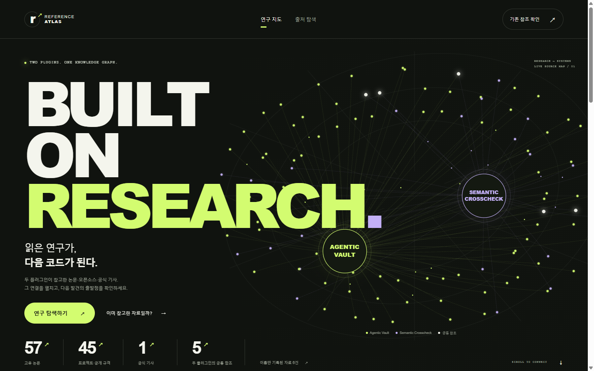
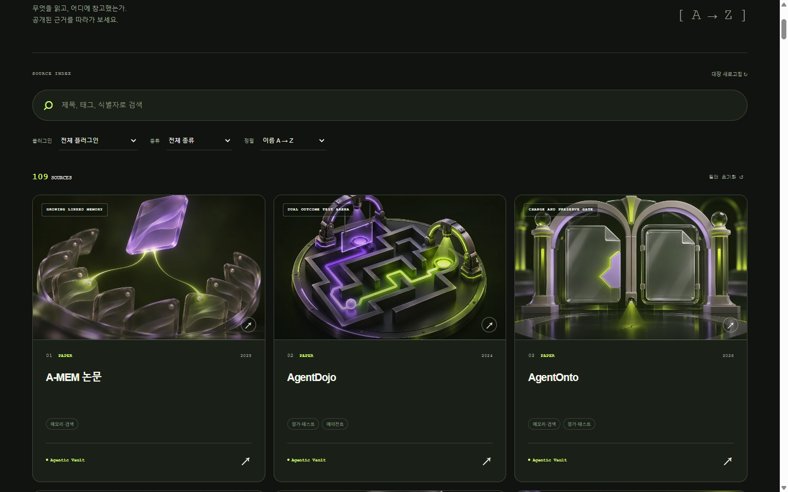

MEMORY & HANDOFF
agentic-vault
기억과 세션 인계를 다루는 플러그인입니다. 이 플러그인에서 참고한 출처와 공개 문서의 인용 맥락을 Atlas에서 연결합니다.
포트폴리오의 프로젝트 소개Selected project Reference Atlas
플러그인을 만들며 참고한 논문과 공개 프로젝트를 한곳에 모았습니다. 자료를 정리하고, 같은 출처를 다시 추천하는 일을 줄이기 위해 만든 Reference Atlas입니다.
검색 · 출처 분류 · 기존 참조 점검

From discovery to context
자료의 이름만 모으는 대신, 어떤 자료인지와 어디서 참고했는지를 함께 남겼습니다.
각 출처가 어느 플러그인에서 어떻게 참고되었는지 살펴봅니다. 공개 저장소의 커밋·파일·행으로 연결된 근거에서 원래 맥락을 확인합니다.
arXiv·DOI·GitHub 주소 등으로 이미 등록된 출처인지 대조합니다. 이름이 비슷한 경우는 검토 대상으로 남기며, 미등재를 새 연구의 증거로 보지 않습니다.
기존 참조 점검 열기 (새 탭)
A visual identity for each source
각 출처의 개념을 담은 별도의 이미지를 만들어 카드에 연결했습니다. 제목으로 찾는 탐색에 시각적인 단서를 더했습니다.
이미지는 AI로 제작한 개념 일러스트입니다. 원 논문의 그림이나 실험 결과를 재현한 자료가 아닙니다.
Sources connected to practice
Reference Atlas는 두 플러그인의 공개 인용 기록을 연결합니다. 각각의 기록에서 설계 참고와 배경 자료의 역할을 살펴볼 수 있습니다.
MEMORY & HANDOFF
기억과 세션 인계를 다루는 플러그인입니다. 이 플러그인에서 참고한 출처와 공개 문서의 인용 맥락을 Atlas에서 연결합니다.
포트폴리오의 프로젝트 소개MODELING & CROSSCHECK
PostgreSQL·온톨로지·시맨틱 레이어의 결과를 교차 검증하는 플러그인입니다. 검증과 모델링에 참고한 출처가 어떤 문서에서 언급되었는지 따라갈 수 있습니다.
포트폴리오의 프로젝트 소개Explore the actual Atlas
소개에서 살펴본 검색·분류·참조 점검을 실제 서비스에서 이용해 보세요.
Reference Atlas 열기 (새 탭) technoetic.github.io/reference-atlas